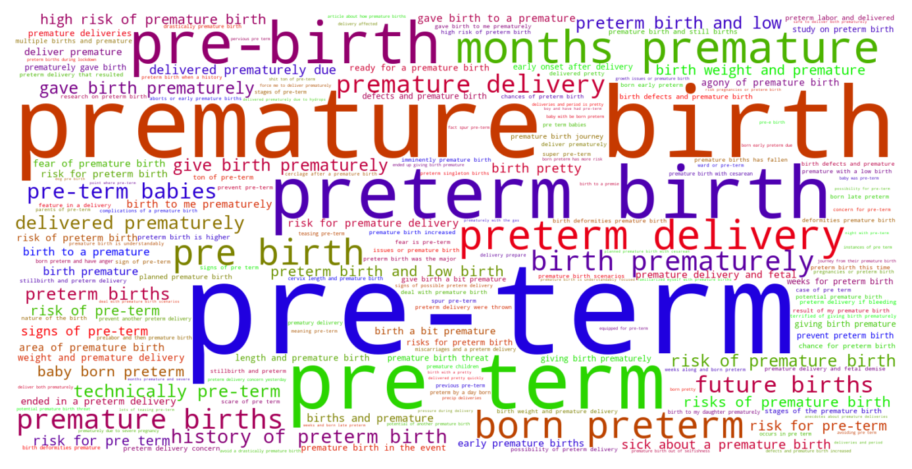

Jump to section:
Samples from Social CorpusHits per UMLS Alias on Social Corpus
Word Cloud Comparison
Embedding Space Comparison
Nearest Neighbors by Semantic Type
Related Analysed Concepts
Samples from Social Corpus
Called my roommate ( whom I've previously posted about before ) and asked her to take me to the hospital because I was fucking terrified I was in the beginning stages of pre-term labor or something .
Confidence: 0.730. Reddit link
What to discuss with baby daddy pre-birth. ?
Confidence: 0.520. Reddit link
I've been told my situation is very unusual , but I've tried to stay away from statistics and just focus on people's anecdotes about premature deliveries going well .
Confidence: 0.637. Reddit link
Are there test to be done to be sure even if born preterm , my boy will still lead a normal and healthy life with no disabilities ?
Confidence: 1.000. Reddit link
How did you go about finding a pediatrician pre birth ?
Confidence: 0.775. Reddit link
Dare I hope that this was some kind of physiological requiring and perhaps future births won't involve back labor ?
Confidence: 0.693. Reddit link
I am participating in a March of Dimes study on preterm birth .
Confidence: 0.827. Reddit link
The photos would do this more justice ; but I was born 3 months premature .
Confidence: 0.750. Reddit link
Plus we were told if my placenta hasn't moved in two weeks at my 28 weeks ultrasound we will be scheduling a csection for 36 weeks which we anticipated anyway since my son came at 34 weeks with no prior signs of possible preterm delivery .
Confidence: 0.718. Reddit link
I know the statistics say twins are , on average , born around 36-37 weeks , but I don't know how heavily those statistics are swayed by complications necessitating pre-term emergency deliveries .
Confidence: 0.603. Reddit link
Hits per UMLS Alias on Social Corpus
-
pre term
160 hits
-
premature birth
133 hits
-
preterm birth
45 hits
-
birth premature
20 hits
-
premature delivery
17 hits
-
premature births
17 hits
-
preterm delivery
17 hits
-
births premature
14 hits
-
delivery premature
7 hits
-
birth preterm
6 hits
-
pregnancy delivered premature
6 hits
-
deliveries preterm
5 hits
-
preterm births
3 hits
-
births preterm
2 hits
-
premature delivery affected infants
1 hits
-
delivery preterm
1 hits
-
premature childbirth
1 hits
-
early onset delivery
1 hits
-
premature pregnancy delivered
1 hits
-
premature pregnancy delivered finding
0 hits
-
premature delivery finding
0 hits
-
prematurity
0 hits
-
premature childbirth nos
0 hits
-
shortened gestation time
0 hits
Word Cloud Comparison
Keywords matching C0151526
Keywords matched against concept. Word size represents frequency.
Keywords co-occurring with C0151526
Co-occurrence is measured at the document-level (i.e. Reddit submissions). Frequencies are normalized to account for keywords common to all CUIs.
Embedding Space Comparison
T-SNE comparison for word embeddings learned from medical domain (EuroPMC) and social media (Reddit) independently.
Pearson correlation for union of closest 1000 neighbors: 0.356
Nearest Neighbors by Semantic Type
Most similar concepts in each of the selected UMLS semantic types. Based on concept embeddings from social corpus.
T046 (Pathologic Function)
-
C0151526
Pre term
1.000 Similarity
-
C0022876
Early labor
0.917 Similarity
-
C0729264
Preterm premature rupture membrane
0.832 Similarity
-
C0852962
Complications delivery
0.812 Similarity
-
C0015944
Pregnancy prom
0.804 Similarity
-
C0022865
Complications labor
0.785 Similarity
-
C0810343
Complications during labor
0.784 Similarity
-
C4072908
Induced vaginal delivery
0.754 Similarity
T047 (Disease or Syndrome)
-
C0231341
Aging premature
0.850 Similarity
-
C0340464
Extrasystoles
0.757 Similarity
-
C0033036
Atrial premature contractions
0.731 Similarity
-
C0235863
Delayed delivery
0.719 Similarity
-
C0877121
Aids related complications
0.714 Similarity
-
C0342257
Diabetes complications
0.708 Similarity
-
C0473498
Ruptured uterus before labor
0.701 Similarity
-
C4704910
Sepsis during pregnancy
0.686 Similarity
T061 (Therapeutic or Preventive Procedure)
-
C0269694
Normal birth
0.810 Similarity
-
C0011209
Delivery
0.802 Similarity
-
C0269704
Spontaneous vaginal breech birth
0.774 Similarity
-
C0559916
Water birth delivery
0.760 Similarity
-
C0404381
Delivery placenta
0.757 Similarity
-
C0195707
Breech delivery
0.734 Similarity
-
C0204778
Delivery nurse
0.726 Similarity
-
C0195710
Footling breech delivery
0.722 Similarity
T184 (Sign or Symptom)
-
C1301639
Pain during labor delivery
0.781 Similarity
-
C0231243
Complications early
0.733 Similarity
-
C2735340
Preterm labor symptoms
0.712 Similarity
-
C0565619
Fetal distress labor
0.706 Similarity
-
C0474368
Laboring pain
0.691 Similarity
-
C2985326
Signs impending birth
0.672 Similarity
-
C0848200
Postpartum pain
0.642 Similarity
-
C3494358
Prodromal sign
0.613 Similarity
T037 (Injury or Poisoning)
-
C0005604
Traumatic birth
0.781 Similarity
-
C0269858
Traumatic lesion during delivery
0.770 Similarity
-
C0730592
Vulval tear during delivery
0.727 Similarity
-
C1959898
Traumatic injury during pregnancy
0.662 Similarity
-
C0417108
Jump from burning hospital
0.661 Similarity
-
C3203359
Ruptures
0.654 Similarity
-
C0417045
Fall from hospital gurney
0.619 Similarity
-
C0554397
Vaginal muscle tear
0.616 Similarity
T079 (Temporal Concept)
-
C0016145
First born child
0.777 Similarity
-
C2964377
Preterm time
0.735 Similarity
-
C2826645
Birth day
0.719 Similarity
-
C0421451
Birthdate
0.699 Similarity
-
C0022871
Labor first stage
0.694 Similarity
-
C2736116
Birth time
0.675 Similarity
-
C0022872
Second stage labour
0.673 Similarity
-
C3489408
Hospital stay
0.657 Similarity
T100 (Age Group)
-
C4048294
Preterm baby
0.762 Similarity
-
C3494262
Extremely preterm infant
0.750 Similarity
-
C4551581
Full term baby
0.678 Similarity
-
C0021289
Newborn
0.573 Similarity
-
C3825962
Middle aged women
0.492 Similarity
-
C0021270
Baby
0.463 Similarity
-
C0008059
Child
0.420 Similarity
-
C0682054
Mature adult
0.414 Similarity
T201 (Clinical Attribute)
-
C1301668
Delivery time
0.761 Similarity
-
C1286282
Birth outcomes
0.722 Similarity
-
C1286049
Aspect delivery
0.704 Similarity
-
C0566679
Length labor
0.672 Similarity
-
C1286057
Completeness placenta
0.583 Similarity
-
C1286059
Measure placenta
0.568 Similarity
-
C1997846
Heart rate recovery time
0.560 Similarity
-
C1705488
Ftm
0.559 Similarity
T060 (Diagnostic Procedure)
-
C0040862
Labor trial
0.727 Similarity
-
C0200048
Vaginal exam
0.659 Similarity
-
C0033053
Prenatal diagnoses
0.635 Similarity
-
C0206521
Interventional ultrasound
0.635 Similarity
-
C1578855
Monitoring labor
0.612 Similarity
-
C0032976
Pregnancy test
0.587 Similarity
-
C0302488
Specialized medical examination
0.582 Similarity
-
C2457150
Ultrasound placenta
0.576 Similarity
T048 (Mental or Behavioral Dysfunction)
-
C0522187
Fear childbirth
0.727 Similarity
-
C0338927
Hospitalism
0.634 Similarity
-
C0038436
Ptsd
0.611 Similarity
-
C0563172
Dangerous plans
0.572 Similarity
-
C0522195
Fear women
0.571 Similarity
-
C0038441
Stress disorder
0.555 Similarity
-
C1306341
Mental disability
0.542 Similarity
-
C0233704
Fears pregnancy
0.530 Similarity
T032 (Organism Attribute)
-
C4086849
Sex at birth
0.716 Similarity
-
C0005612
Weight baby
0.657 Similarity
-
C0805393
Breathing spontaneous
0.638 Similarity
-
C0017504
Gestational age
0.617 Similarity
-
C1954788
Gestational age weeks
0.567 Similarity
-
C0598779
Life history
0.519 Similarity
-
C0751992
Fetal weight
0.513 Similarity
-
C0518035
Children growth
0.502 Similarity
T042 (Organ or Tissue Function)
-
C1325917
Organ induction
0.639 Similarity
-
C0032058
Placentation
0.637 Similarity
-
C4250378
Neural induction
0.625 Similarity
-
C2753527
Heart induction
0.625 Similarity
-
C4244173
Gestational development process
0.569 Similarity
-
C0037271
Aged skin
0.535 Similarity
-
C0005778
Clotting
0.519 Similarity
-
C0079103
Cervical dilation
0.518 Similarity
T101 (Patient or Disabled Group)
-
C0233363
Monoamniotic twins
0.632 Similarity
-
C0871503
Dying patients
0.604 Similarity
-
C0008098
Child hospitalized
0.604 Similarity
-
C0021562
Inpatient
0.592 Similarity
-
C4727511
Women who have mastectomy
0.554 Similarity
-
C0032804
Postpartum women
0.536 Similarity
-
C1516213
Cancer patient
0.527 Similarity
-
C0683995
Drug exposed child
0.513 Similarity
T019 (Congenital Abnormality)
-
C0000768
Birth defect
0.631 Similarity
-
C0432185
Absent muscles since birth
0.622 Similarity
-
C0266393
Uterus didelphys
0.613 Similarity
-
C4721530
Sparse hair since birth
0.598 Similarity
-
C0018798
Heart defect
0.581 Similarity
-
C0266383
Abnormality uterus
0.569 Similarity
-
C0149530
Congenital heart block
0.566 Similarity
-
C0152021
Congenital heart disease
0.561 Similarity
T049 (Cell or Molecular Dysfunction)
-
C4725191
Stop lost
0.631 Similarity
-
C0544885
Stop gain
0.512 Similarity
-
C1705285
Mutated
0.507 Similarity
-
C0002938
Aneuploidy
0.496 Similarity
-
C0008628
Del
0.461 Similarity
-
C0008625
Chromosomal abnormality
0.460 Similarity
-
C0041107
Trisomy
0.439 Similarity
-
C0040715
Translocation
0.431 Similarity
T031 (Body Substance)
-
C0392908
Secretion vaginal
0.630 Similarity
-
C3532405
Swab from placenta
0.605 Similarity
-
C1446336
Multiple plaques
0.537 Similarity
-
C0007806
Spinal fluid
0.531 Similarity
-
C0238626
Amniotic meconium
0.525 Similarity
-
C0162371
Cord blood
0.491 Similarity
-
C3532423
Swab from hand
0.482 Similarity
-
C0025111
Wastes medical
0.478 Similarity
T067 (Phenomenon or Process)
-
C0023983
Long term effects
0.614 Similarity
-
C0337240
Fall while being carried
0.541 Similarity
-
C2986841
Binding potential
0.521 Similarity
-
C2348438
Encapsulation
0.513 Similarity
-
C0023672
Experience life
0.506 Similarity
-
C0677038
Increase pressure
0.499 Similarity
-
C0013956
Emergency
0.493 Similarity
-
C0023670
Events life change
0.492 Similarity
T023 (Body Part, Organ, or Organ Component)
-
C1268155
Placenta part
0.612 Similarity
-
C0042232
Vaginal
0.611 Similarity
-
C0042149
Uterus
0.594 Similarity
-
C1268123
Liver part
0.554 Similarity
-
C1268107
Lung part
0.547 Similarity
-
C0227486
Left liver
0.544 Similarity
-
C0007776
Grey matter
0.539 Similarity
-
C0007874
Cervix
0.539 Similarity
T190 (Anatomical Abnormality)
-
C0269852
Previa vasa
0.606 Similarity
-
C4732742
Hole center heart
0.562 Similarity
-
C0266785
Umbilical cord issue
0.529 Similarity
-
C4025734
Anomaly scalp
0.526 Similarity
-
C0405024
Accessory placenta
0.525 Similarity
-
C3887590
Stricture ureter
0.524 Similarity
-
C0302142
Anatomic abnormality
0.488 Similarity
-
C1265602
Multiple masses
0.486 Similarity
T200 (Clinical Drug)
-
C3216620
Progesterone vaginal product
0.599 Similarity
-
C3218395
Papain pill
0.513 Similarity
-
C5222490
Progesterone injection
0.505 Similarity
-
C1247687
Progesterone suppositories vaginal
0.503 Similarity
-
C0307304
Pitocin injection
0.482 Similarity
-
C0723917
Triple antibiotic ointment
0.472 Similarity
-
C1163679
Injections sterile water
0.471 Similarity
-
C1247002
Misoprostol oral tablet
0.469 Similarity
T018 (Embryonic Structure)
-
C1278988
Entire placenta
0.594 Similarity
-
C0553522
Cord placenta umbilical
0.582 Similarity
-
C0032043
Placenta
0.581 Similarity
-
C0392917
Afterbirth
0.568 Similarity
-
C0553498
Gestational sac
0.548 Similarity
-
C0008508
Chorionic villi
0.531 Similarity
-
C0008503
Chorionic
0.514 Similarity
-
C0002630
Amniotic
0.511 Similarity
T005 (Virus)
-
C3743464
Mycobacteriophage whirlwind
0.591 Similarity
-
C1220459
Hart park group
0.550 Similarity
-
C5058350
Fairfax lookout virus
0.518 Similarity
-
C0205939
Cold virus common
0.483 Similarity
-
C4415400
Phage wrath
0.474 Similarity
-
C3768023
Mycobacteriophage conspiracy
0.470 Similarity
-
C0206419
Coronavirus
0.465 Similarity
-
C4433204
King virus
0.445 Similarity
T059 (Laboratory Procedure)
-
C0200896
Cytogenetic studies
0.576 Similarity
-
C1295143
Fetal fibronectin test
0.572 Similarity
-
C0026040
Sectionings thin
0.553 Similarity
-
C0023901
Liver tests
0.547 Similarity
-
C0005729
Bleeding time
0.523 Similarity
-
C0850355
Pregnancy blood test
0.522 Similarity
-
C0368930
Clotting time
0.521 Similarity
-
C0430400
Culture general
0.506 Similarity
T041 (Mental Process)
-
C0596475
Early experience
0.575 Similarity
-
C0282124
Near death experience
0.574 Similarity
-
C0237607
Experience
0.554 Similarity
-
C0584925
Out body experience
0.547 Similarity
-
C0677838
Grief loss
0.534 Similarity
-
C0040671
Training transfer
0.521 Similarity
-
C0025265
Short term memory
0.518 Similarity
-
C0015726
Scared
0.514 Similarity
T074 (Medical Device)
-
C0013962
Emergency medical tag
0.567 Similarity
-
C0593622
Home pregnancy test
0.536 Similarity
-
C0179850
Birthing chair
0.528 Similarity
-
C0740043
Medical supplies
0.517 Similarity
-
C0085104
System
0.512 Similarity
-
C0016533
Forceps
0.506 Similarity
-
C0180647
Internal fetal heart rate monitoring
0.504 Similarity
-
C3878229
Assistive dining table
0.489 Similarity
T034 (Laboratory or Test Result)
-
C0240802
Positive pregnancy test
0.563 Similarity
-
C0427777
Pregnancy results tests
0.562 Similarity
-
C5201036
Low platelets
0.539 Similarity
-
C0427780
Negative pregnancy test
0.528 Similarity
-
C0588465
Sperm forward progression
0.519 Similarity
-
C5206315
Nse positive
0.515 Similarity
-
C3898879
Triple positive
0.509 Similarity
-
C4524569
Donor retested negative
0.507 Similarity
T054 (Social Behavior)
-
C0582101
Talking about dying
0.532 Similarity
-
C0028658
Nurse patient
0.532 Similarity
-
C0815201
Couple relations
0.531 Similarity
-
C0422386
Patient suing doctor finding
0.523 Similarity
-
C0019421
Straight
0.492 Similarity
-
C0679426
Incompatibility
0.473 Similarity
-
C0679997
Premarital sex
0.472 Similarity
-
C0679953
Cultural experience
0.469 Similarity
T007 (Bacterium)
-
C0018154
Gram positive bacteria
0.516 Similarity
-
C0995648
Genus quinella
0.487 Similarity
-
C0579233
Group b strep
0.471 Similarity
-
C0995705
Frankia
0.434 Similarity
-
C0022828
L forms
0.389 Similarity
-
C4169658
Convivina
0.384 Similarity
-
C0597134
Flora oral
0.375 Similarity
-
C0036111
Salmonella
0.370 Similarity
T039 (Physiologic Function)
-
C0743925
Fetal growth
0.514 Similarity
-
C0599423
Joint stress
0.511 Similarity
-
C2256369
Heart process
0.496 Similarity
-
C0015928
Fetal development
0.484 Similarity
-
C3852954
Physiome
0.482 Similarity
-
C0035203
Ventilation
0.476 Similarity
-
C0025320
Change
0.471 Similarity
-
C3178752
Effect fertility
0.464 Similarity
T044 (Molecular Function)
-
C0887940
Gene arrangements
0.510 Similarity
-
C1152025
Docs
0.492 Similarity
-
C1721104
Breaks dna
0.448 Similarity
-
C1749457
Ligands activity
0.419 Similarity
-
C2247516
Sgah
0.411 Similarity
-
C1149528
Wishful thinking binding
0.407 Similarity
-
C1148613
Binding iron
0.403 Similarity
-
C1149397
Heartless ligand
0.399 Similarity
T195 (Antibiotic)
-
C0003232
Antibiotics
0.504 Similarity
-
C0723285
Septa
0.469 Similarity
-
C0718575
Antibiotics ear
0.427 Similarity
-
C0718950
Biomox
0.372 Similarity
-
C0030842
Penicillin
0.361 Similarity
-
C1564058
Roxi basics
0.356 Similarity
-
C0013090
Doxycycline
0.353 Similarity
-
C0002645
Amoxicillin
0.346 Similarity